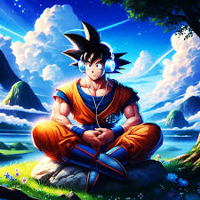
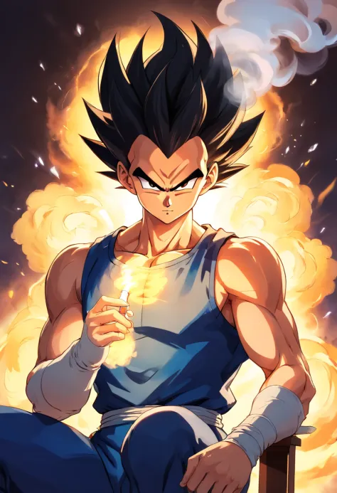
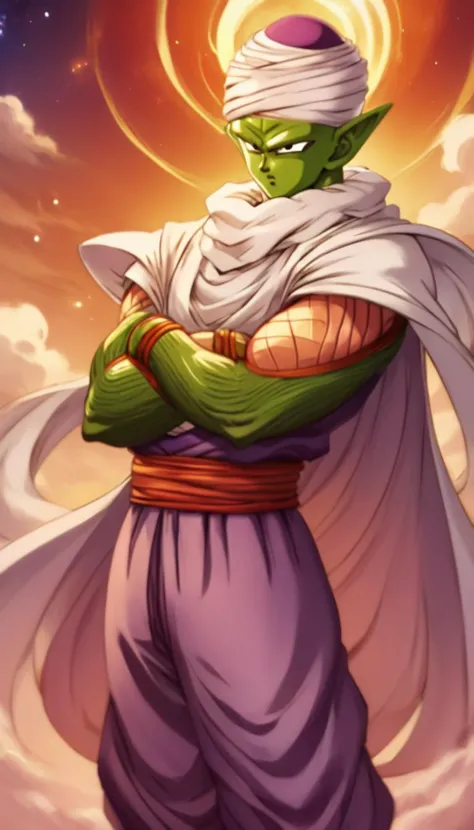
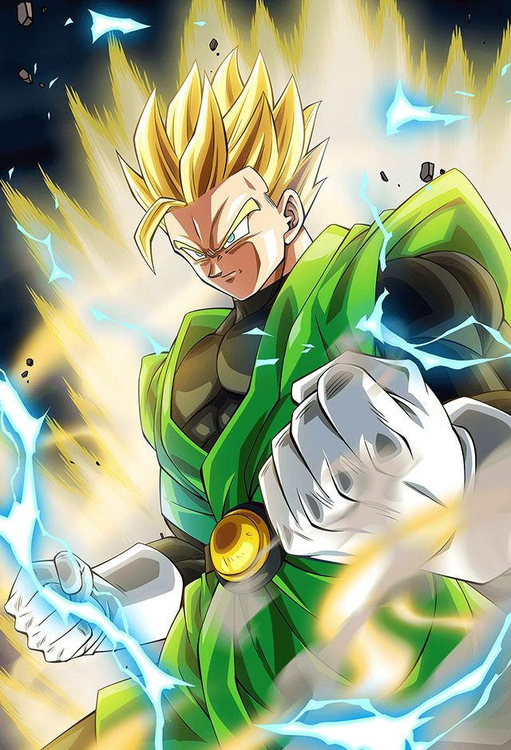
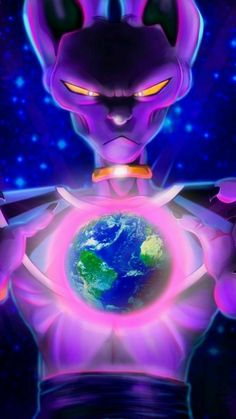
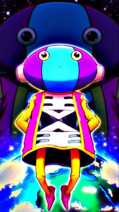

-
Goku
Descriçao
Goku é um guerreiro lendário, conhecido por sua incrível força e determinação inabalável. Originário do planeta Vegeta, ele foi enviado à Terra ainda bebê e foi criado como um humano. Dotado de um coração puro e uma sede insaciável por desafios, Goku embarca em jornadas épicas para se tornar o mais forte lutador do universo. Sua jornada o leva a enfrentar inimigos formidáveis, fazer amigos leais e proteger seu planeta natal e o universo de ameaças cada vez maiores. Com sua personalidade ingênua, mas sempre disposto a lutar pelo que é certo, Goku personifica a essência do herói, inspirando gerações com sua bravura e nobreza de espírito.
-
Vegeta
Descrição
Vegeta é um poderoso guerreiro Saiyajin, caracterizado por sua determinação feroz e orgulho inabalável. Inicialmente, ele é apresentado como um antagonista, rivalizando com Goku em uma busca incessante por poder e reconhecimento. No entanto, ao longo da série, sua jornada é marcada por uma complexa evolução, passando de um vilão arrogante para um aliado valente e protetor de seu povo. Seu passado tumultuado e sua busca por redenção o tornam um personagem profundamente cativante, e suas batalhas internas frequentemente rivalizam com suas lutas físicas. Apesar de sua natureza áspera e desconfiada, Vegeta demonstra uma profunda lealdade aos poucos amigos que conquista, tornando-se uma peça fundamental na defesa da Terra e do universo contra ameaças cada vez maiores.
-
Piccolo
Descrição
Piccolo é um Namekuseijin, uma raça alienígena conhecida por suas habilidades regenerativas e poderes de luta excepcionais. Com uma aparência imponente, pele verde e antenas, ele é um guerreiro sábio e sério, possuindo um forte senso de justiça. Piccolo é um mentor dedicado, especialmente para Gohan, e sua evolução pessoal destaca sua capacidade de mudança e crescimento, tornando-o um personagem complexo e admirado.
-
Gohan
Descrição
Gohan é um jovem prodígio com um imenso potencial de luta. Filho de um famoso guerreiro, ele possui uma combinação única de força e intelecto. Gohan é conhecido por seu caráter gentil e coração puro, contrastando com seu poder latente e habilidades de combate excepcionais. Ao longo de seu crescimento, ele equilibra sua natureza pacífica com a necessidade de proteger os que ama, tornando-se um defensor corajoso e admirado.
-
Bills
Descrição
Bills é um deus da destruição com uma presença formidável e poderes vastamente superiores aos de outros seres. Ele possui uma aparência felina, com pele roxa e olhos penetrantes, exalando uma aura de autoridade e perigo. Como entidade cósmica, Bills é responsável por manter o equilíbrio no universo, destruindo planetas e civilizações quando necessário. Apesar de seu papel temível, ele também demonstra momentos de capricho e humor, além de uma apreciação por comida gourmet, o que acrescenta complexidade à sua personalidade imponente.
-
Zeno
Descrição
Zeno é uma entidade suprema com aparência infantil, caracterizada por sua baixa estatura, pele azul e um semblante inocente. Apesar de sua aparência inofensiva, ele possui um poder incomensurável, capaz de obliterar universos inteiros com um simples gesto. Zeno exerce autoridade absoluta sobre todas as realidades, sendo reverenciado e temido por deuses e mortais. Sua personalidade é marcada por uma combinação de ingenuidade e capricho, tornando-o uma figura imprevisível e extraordinariamente poderosa.